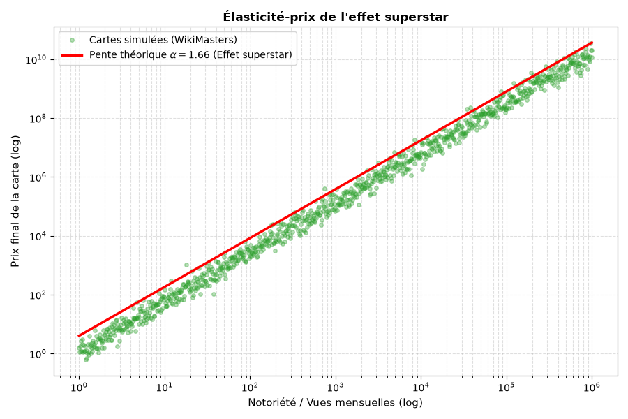
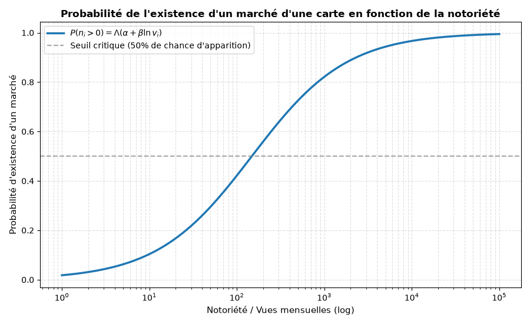
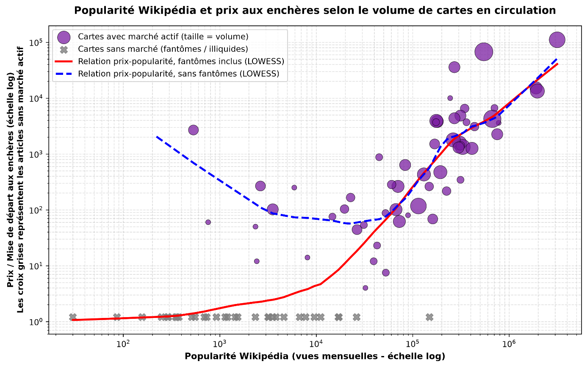
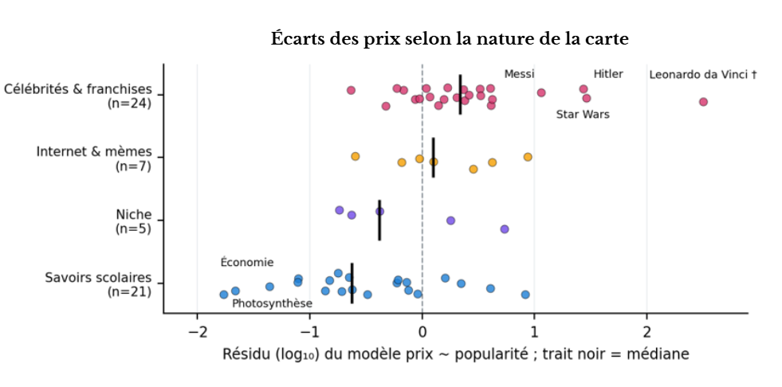
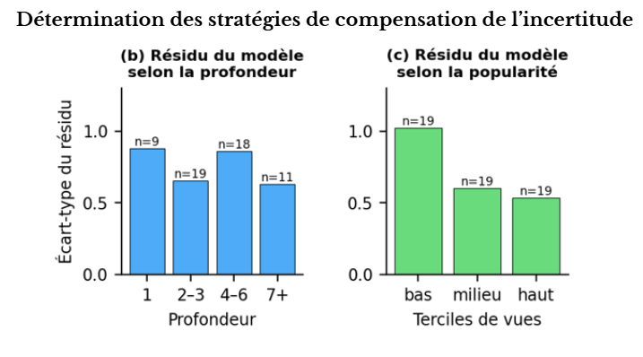

Des cartes, des clics et des millions : l'économie folle de Wikimasters
Une approche théorique et empirique de la valeur des cartes virtuelle
Présentation de Wikimasters
Wikimasters est un site Internet qui convertit l'ensemble des pages françaises de l'encyclopédie en ligne Wikipédia en cartes à collectionner (on parle en anglais de « TCG » ou Trading Card Game). Développé en mars 2026 par Naïm Ouellet1, le jeu connait un immense succès en septembre 2026, atteignant presque 200 000 joueurs quotidiens.
Principe du jeu
Toutes les dix minutes, le joueur obtient un paquet de cinq cartes dont la rareté dépend la visibilité de la page Wikipédia associée. Il en existe six niveaux : légendaire (L), ultra-rare (UR), super-rare (SR), peu commune (PC), commune (C). Le joueur a alors le choix de conserver la carte, de la défausser contre une unité de monnaie (les Wikibidous), de la mettre aux enchères, de la gagner au cours d'une bataille ou de l'échanger. De fait, en plus de ces niveaux de rareté, la carte a en outre des statistiques de combat (plafonnées à 10 000) qui se fondent sur la qualité et la longueur de l'article Wikipédia.
Formalisation économique
La possibilité de défausser une carte contre une unité de monnaie permet, de fait, la formation d'un prix plancher équivalent à 1 Wikibidous : on parle alors d'un « robinet de monnaie2 » (l'échange de monnaie virtuelle contre une monnaie réelle, sans qu'il n'y ait de destruction virtuelle en constitue également un). Plus généralement, le marché aux enchères de Wikimasters correspond à l'enchère anglaise ascendante que théorise Vickrey : l'information y est transparente (on reviendra là-dessus plus tard dans l'article), c'est-à-dire que tout le monde peut voir l'offre qu'autrui propose, et chacun va miser davantage jusqu'à l'abandon de tous les concurrents (on parle alors parfois de la « malédiction du vainqueur »). Le vendeur attribue, quant à lui, un prix de réserve optimal3 à sa carte en dessous duquel il refuse de la céder : c'est l'équivalent économique de la mise de départ.
Valeur d'une carte
Adam Smith distingue du prix naturel d'une marchandise (c'est-à-dire la rémunération du travail, du capital et de la terre) le prix du marché, déterminé par les lois classiques de l'offre et de la demande4. Ce que le jeu fournit de plus proche d'un coût de production, si l'on transpose ce modèle, est le temps de tirage nécessaire pour obtenir une carte ; la visibilité de la page Wikipédia entre à la fois du côté de la demande puisqu'elle produit une désirabilité et à la fois du côté de l'offre puisque la rareté est administrée.
Approche mathématique de la valeur d'une carte
L'on se propose, dès lors de déterminer le coût de recherche d'une carte de rareté r que l'on considère substituable à n'importe quelle autre carte de rareté équivalente. Puisque le jeu permet de gagner cinq cartes toutes les dix minutes, un joueur peut obtenir environ 30 Wikibidous par heure ou 1 Wikibidous toutes les deux minutes ; lorsqu'il décide de conserver la carte, il perd 1 Wikibidous, c'est le coût d'opportunité du tirage. Un joueur qui cherche une carte générique de rareté ne paiera donc pas sur le marché un montant supérieur à l'effort moyen nécessaire pour l'obtenir par lui-même. De fait, si la probabilité d'apparition d'une carte de rareté \(r\) lors d'un tirage est \(p_r\), il faut en moyenne \(1/p_r\) tirages pour en obtenir une. Le coût de recherche espéré \(C_r\), exprimé en Wikibidous, s'établit alors à :
\(C_r\) est un prix plafond pour les cartes génériques de rareté \(r\), puisque dès lors que la carte est substituable, aucun acheteur ne paiera plus cher sur le marché secondaire que le coût d'obtention par le tirage direct. En revanche, ce plafond s'effondre dès que l'on recherche une page spécifique \(i\). Dans un catalogue de \(N\) pages (soit près de 2,78 millions de cartes), la probabilité de tirer une carte précise par simple hasard devient extrêmement faible (\(p_i = 1/N\)). Le coût de recherche individuel s'élève alors à :
Soit presque dix ans de tirages ininterrompus. Il est manifestement impossible d'obtenir une carte ciblée par le seul tirage aléatoire : le prix d'une carte sur le marché dépend alors exclusivement de la demande, qui dépend elle-même de la notoriété de la page Wikipédia associée, de la rareté-stock de la carte et de l'attrait qu'elle exerce sur les collectionneurs. Il en résulte dès lors une structure de prix à deux niveaux : l'un générique par rareté, ancré par le coût de la recherche qui fixe le prix plancher des cartes ordinaires et l'autre différencié par carte, déconnecté du coût de recherche, qui dépend de la notoriété et de la préférence des joueurs. Remarquons, de fait, que le coût de recherche d'une carte légendaire est de 1643 Wikibidous et que son prix médian sur le marché des enchères est de 1302 Wikibidous.
Fixation théorique du prix
Moshe Adler, lorsqu'il reprend en 1985 la théorie des Superstars de Sherwin Rosen5, explique la différence de valeur d'un bien à l'autre par un « capital de consommation6 » : c'est-à-dire que les joueurs préfèreront l'achat d'une carte dont ils peuvent discuter et parler (chose rendue possible sur la plateforme grâce à un système de vitrine et de réseau social). On attend donc une relation convexe entre la notoriété et le prix d'une carte sur le marché aux enchères, d'autant que ce prix est possiblement accentué par des effets d'entrainement et une consommation ostentatoire, les joueurs cherchant à spéculer sur les cartes les plus rares :7

On s'intéresse donc à l'élasticité-prix d'une carte à mesure que sa visibilité et sa popularité augmente. Le modèle ci-dessus est théorique, avec un coefficient de pente plus ou moins égal à 1,668. Une carte qui fait 200 vues mensuelles devrait se vendre à près de 1 000 Wikibidous. Les joueurs ici sauront que c'est rarement le cas. En réalité, moins la carte fait de vues, moins elle se vend chère, mais surtout, moins elle est trouvable sur le marché !
Pourquoi certaines cartes communes n'apparaissent jamais sur le marché aux enchères ?
Puisque le détenteur est assuré de pouvoir défausser sa carte contre une unité de monnaie, il ne mettre en vente cette carte que si le gain net espéré de l'enchère dépasse celui de cette défausse. De fait, on obtient la formule suivante :
Avec \(R_i\) la recette attendue de l'enchère, \(n_i\) le nombre d'enchérisseurs9, \(g\) le gain certain en défaussant et \(c\) le coût de mise en vente. On peut traduire la chose graphiquement, et ainsi obtenir la probabilité qu'un marché existe en fonction de la notoriété d'une carte.

0) = Λ(α + β ln vᵢ), croît de 0,2 pour 25 vues mensuelles à 0,8 au-delà de mille vues mensuelles, en franchissant le seuil de 0,5 en cours de route." width="800" height="600" loading="lazy">Pour 25 vues mensuelles sur une page Wikipédia, la probabilité que la carte soit mise en vente, est, à terme, de 0.2. Lorsqu'elle dépasse les mille vues mensuelles, celle-ci monte à 0.8.
Confrontation à la réalité
Qu'en est-il avec la réalité ? Pour étudier ce marché, nous avons constitué un échantillon d'une centaine de cartes réparties en 4 catégories : les célébrités et les franchises, les savoirs scolaires, ce qui est relatif à Internet, et enfin, ce qui relève de la niche. De fait, la moitié des cartes sont légendaires, contre 0.06 % du catalogue. Il s'agit donc d'analyser les mécanismes, les résultats ci-dessous ne renseignant pas sur les niveaux de population. Il aurait fallu pour cela construire un tirage aléatoire stratifié par rareté et avec pondération.

Quelle conclusion pouvons-nous tirer de ce graphique ? D'abord, une grande tendance : si la pente de la relation prix-popularité, fantôme inclus, est de 1.118 contre 1.66 pour notre modèle théorique, elle monte à 1.735 dès lors que l'on ignore les valeurs inférieures à 10 000 vues mensuelles, soit une différence bien inférieure. Cela veut en fait dire qu'en dessous de 10 000 vues, les valeurs observées des cartes sont très inférieures à celles simulées d'après le modèle. En revanche, après 10 000 vues, ce même modèle devient plutôt significatif.
Nous remarquerons toutefois deux courbes : l'une, rouge, qui tient compte des cartes fantômes et qui ne sont pas trouvables sur le marché aux enchères et une deuxième, en bleu pointillé, qui ne tient pas compte de ces cartes fantômes. La particularité de cette dernière est qu'elle suit une tendance inverse à la courbe rouge, la valeur des cartes augmentant avec une popularité décroissante. C'est là que nous devons introduire une nouvelle distinction entre une désirabilité et une popularité, cette nouvelle pente se justifiant sans doute par des collectionneurs de niche à forte valeur idiosyncratique et dont nous avons déjà parlé dans un paragraphe précédent.

Il en va de même pour la probabilité d'existence d'un marché pour une carte donnée avec une tendance générale similaire, à la différence près que l'écart est bien plus important : cette probabilité dépasse 50 % une fois les 255 vues mensuelles acquises d'après le modèle théorique, contre 10 000 vues mensuelles pour le modèle empirique.
![Courbes de la probabilité d'existence d'un marché pour une carte en fonction de la notoriété (vues mensuelles, échelle logarithmique d'environ cent à un million) : les points gris sont les probabilités observées par classes, la courbe violette lissée (LOWESS) est la courbe empirique, la ligne bleue pointillée le modèle logistique théorique et la ligne orange pointillée le seuil critique de 50 % ; la courbe empirique franchit ce seuil autour de 10 000 vues, alors que le modèle théorique le franchit beaucoup plus tôt, et toutes deux tendent vers 1 à partir d'environ 100 000 vues.](../images/wikimasters-5.png)
Robinets, puits et masse monétaire
La défausse de cartes contre 1 Wikibidous est un robinet monétaire illimité, avec un flux quotidien de création calculable avec la formule joueurs x paquets par joueur x 5 x part défaussée. On peut obtenir le tableau suivant :
| Paquets par joueur et par jour | 10 | 30 | 60 |
|---|---|---|---|
| 215 000 joueurs actifs/jour | 10,8 | 32,3 | 64,5 |
| 330 000 joueurs actifs/jour | 16,5 | 49,5 | 99,0 |
En revanche, les puits sont rares, leur efficacité est minimale (seuls les achats de cartes), il n'y a pas de limitations de la borne supérieure et, à biens rares donnés, on attend une hausse tendancielle des prix nominaux : c'est la relation quantitative M·V = P·Q que formule Fisher avec M la masse monétaire, V la vitesse, P les prix et Q la quantité, le tout appliqué à une économie close. Il est probable, donc, à terme, que cette inflation du prix, non suivie par le montant des défausses, constitue une barrière à l'entrée pour les nouveaux joueurs.
À cela s'ajoute un autre problème, puisque la transaction fictive entre deux comptes d'un même joueur ne coûte presque rien, la monnaie étant créée à volonté par le système du jeu (quoique l'on puisse toujours supposer que le coût d'opportunité pour un paquet freine cette création), il existe un risque non négligeable que, lorsqu'elles sont répétées (on parle alors de wash trading), elles faussent les prix de référence du marché ; or ces prix de référence servent justement de point d'ancrage aux acheteurs qui se basent dès lors sur de faux prix pour estimer la valeur réelle de ces objets.
Information et incertitude
La particularité de Wikimasters, c'est que l'information est inégalement répartie entre les joueurs, puisqu'il faut payer environ 10 dollars canadien par mois pour avoir accès à l'historique des ventes, et donc à ce qui favoriserait la liquidité et la formation d'un prix juste. Toutefois, en l'absence de données sur la dispersion des prix de réserve entre abonnés et non-abonnés à carte égale, on ne peut confirmer notre affirmation. En revanche, l'on peut se demander comment les agents économiques vont chercher à compenser leur aveuglement. Il parait probable que l'estimation se fasse selon deux critères : la popularité de la carte, la désirabilité propre, et éventuellement la profondeur du marché qui pourrait traduire cette désirabilité autrement difficile à estimer.

L'analyse de notre échantillon nous porte à croire qu'il s'agit davantage de la popularité, c'est-à-dire de la valeur décidée par le jeu, qui déterminera le prix d'une carte plutôt que la profondeur du marché, c'est-à-dire le nombre de fois où une même carte apparait sur le marché aux enchères. Notons enfin, et ce sera notre dernière remarque avant la conclusion, que George Akerlof10 met en garde contre ces asymétries de l'information qui peuvent, pousser, à terme, le joueur modèle à quitter le marché ; il ne resterait dès lors que les « mauvais joueurs », c'est-à-dire ceux les manipulateurs de prix et les payeurs.
Conclusion
En convertissant l'architecture encyclopédique de Wikipédia en un marché de cartes à collectionner, Wikimasters devient un laboratoire réellement fascinant de l'économie des mondes virtuelles. Cette étude, qui pourrait être poussée bien plus loin avec davantage de données, montre d'abord un marché fragmenté, avec une valeur des cartes qui s'articulent autour de deux régimes distincts : d'un côté un prix plancher d'efficience garantit par le coût d'opportunité de la défausse (1 Wikibidous), et de l'autre, une valorisation fortement convexe appuyée sur la notoriété de la page Wikipédia associée, pilotée par le « capital de consommation » d'Adler. Pour autant, il semblerait que le modèle économique de Wikimasters souffre de faiblesses structurelles en l'absence de puits de monnaie efficaces face à un robinet monétaire illimité11 ; l'inflation tendancielle qui risque d'en découler risque à terme de créer une barrière à l'entrée infranchissable pour les nouveaux entrants (mais ce n'est qu'une hypothèse à ce stade, il faudrait encore une formalisation mathématique) ; à cela s'ajoute la monétisation de l'information qui freine la parfaite formation des prix.
Remarques complémentaires
Durant l'écriture de cet article, nous avons constaté l'absence de mentions légales sur le site, or il s'agit d'une stricte obligation encadrée par la loi12 dès lors que la cible de consommation se trouve en France.
Annexe 1 : données
| Nom de la carte | Nombre de vue Wikipédia | Prix moyen à l'instant de la mesure | Nombre de cartes en vente à l'instant de la mesure |
|---|---|---|---|
| Paris | 779862 | 3600 | 1 |
| Albert Einstein | 346108 | 6526,66667 | 3 |
| Napoléon Ier | 705493 | 6650,5 | 2 |
| Adolf Hitler | 547442 | 67363,0769 | 13 |
| Elvis Presley | 306097 | 1563,875 | 8 |
| Michael Jackson | 1902234 | 15235,5 | 6 |
| Leonardo da Vinci | 534 | 2684,25 | 4 |
| Cléopâtre | 330228 | 1333,11111 | 9 |
| Jésus de Nazareth | 179937 | 3816,5 | 6 |
| Mahatma Gandhi | 3546 | 102 | 5 |
| Marilyn Monroe | 412693 | 1258,33333 | 6 |
| Walt Disney | 130881 | 430,142857 | 7 |
| Cristiano Ronaldo | 1962974 | 13361,75 | 8 |
| Lionel Messi | 3149949 | 110665,1 | 10 |
| Kylie Jenner | 313468 | 344,5 | 2 |
| Elon Musk | 669933 | 4255,75 | 12 |
| Beyoncé | 193726 | 472 | 7 |
| Taylor Swift | 312683 | 4852,8 | 5 |
| Kim Kardashian | 263272 | 1787,375 | 8 |
| Barack Obama | 313423 | 1400 | 3 |
| Queen (groupe) | 221 | 4434 | 0 |
| Star Wars | 271031 | 35800 | 5 |
| Harry Potter | 271019 | 4356 | 5 |
| Pokémon | 169135 | 1510,66667 | 4 |
| Minecraft | 176063 | 3909 | 7 |
| Photosynthèse | 52700 | 7,5 | 2 |
| Molière | 361668 | 3700 | 2 |
| Révolution française | 245027 | 10000 | 1 |
| Seconde Guerre mondiale | 438114 | 3092 | 3 |
| Union européenne | 299172 | 1301,6 | 5 |
| Organisation des Nations unies | 224902 | 216,666667 | 3 |
| Théorème de Pythagore | 70513 | 262,666667 | 6 |
| Tableau périodique des éléments | 752818 | 2254,8 | 5 |
| Démocratie | 67175 | 101 | 6 |
| Capitalisme | 60593 | 283,333333 | 3 |
| Philosophie | 148525 | 261,666667 | 3 |
| Histoire de France | 89573 | 80 | 1 |
| Guerre froide | 161577 | 68,5 | 4 |
| Renaissance (art) | 0 | 134,4 | 5 |
| Impressionnisme | 114857 | 117 | 10 |
| Théorie de l'évolution | 3832 | NA | 0 |
| Génétique | 17132 | NA | 0 |
| Système solaire | 174936 | 3710 | 2 |
| Cerveau | 26513 | 44,25 | 4 |
| Économie (discipline) | 32403 | 4 | 1 |
| Droit | 26219 | NA | NA |
| Sociologie | 39450 | 12 | 2 |
| Linguistique | 42788 | 23 | 2 |
| Mathématiques | 149270 | NA | NA |
| Chimie organique | 14735 | 75,5 | 2 |
| Canton de Vaud | 72850 | 61,8333333 | 6 |
| Bataille de Sisak | 0 | NA | 0 |
| Longue Guerre | 2339 | NA | 0 |
| Météorite de Chassigny | 1138 | NA | 0 |
| Manoise | 249 | NA | 0 |
| Orquevaux | 921 | NA | 0 |
| Orcevaux | 359 | NA | 0 |
| Aingoulaincourt | 376 | NA | 0 |
| Soyers (Haute-Marne) | 0 | NA | 0 |
| Violot | 513 | NA | 0 |
| Juzennecourt | 553 | NA | 0 |
| Lacrète | 157 | NA | 0 |
| Leffonds | 693 | NA | 0 |
| Harréville-les-Chanteurs | 759 | 60 | 1 |
| Ormoy-lès-Sexfontaines | 292 | NA | 0 |
| Échelle de Kardashev | 1529 | NA | 0 |
| Hypothèse de la Terre rare | 2421 | 12 | 1 |
| Théorie des cordes | 45192 | 75,5 | 0 |
| Entropie de von Neumann | 0 | NA | 0 |
| Nombre de Skewes | 1201 | NA | 0 |
| Fonction zêta de Riemann | 31204 | 53,5 | 2 |
| Théorème de Ramsey | 2729 | 75,5 | 0 |
| Complexe d'Ediacara | 0 | NA | 0 |
| Gène HOX | 0 | NA | 0 |
| Réaction de Diels-Alder | 3168 | NA | 0 |
| Cortinaire violet | 1445 | NA | 0 |
| Clathrus ruber | 11107 | NA | 0 |
| Tremella mesenterica | 86 | NA | 0 |
| Ceratiomyxa fruticulosa | 350 | NA | 0 |
| Phallus impudicus | 287 | NA | 0 |
| Satyre puant | 8121 | 14 | 1 |
| Cœur de sorcière | 30 | NA | 0 |
| Vesse-de-loup perlée | 2348 | 50 | 1 |
| Fausse-girolle | 0 | NA | 0 |
| Pied bleu | 3559 | NA | 0 |
| Liste de champignons comestibles | 4617 | NA | 0 |
| Bataille des casernes | 731 | NA | 0 |
| Théorie du complot | 83625 | 635 | 5 |
| Paradoxe de Newcomb | 9560 | NA | 0 |
| Méthode scientifique | 16960 | NA | 0 |
| Règle 34 | 44969 | 875 | 2 |
| Mème Internet | 52357 | 87,5 | 2 |
| Rickrolling | 0 | NA | 0 |
| Nyan Cat | 6735 | NA | 0 |
| Doge (mème) | 3205 | NA | 0 |
| Pepe the Frog | 7755 | NA | 0 |
| Grumpy Cat | 5928 | 250 | 1 |
| Shrek (personnage) | 2644 | 267 | 4 |
| Among Us | 19672 | 103,333333 | 3 |
| Skibidi Toilet | 22741 | 166 | 3 |
Annexe 2 : calculs
Calcul de l'élasticité-prix en fonction de l'effet superstar
La valeur accordée par le joueur à la carte représentant la page est une variable aléatoire log-normale13 :
Avec \(\beta_0\, v_i^{\alpha}\) la composante déterministe (liée à la notoriété \(v_i\), avec une élasticité \(\alpha\)) et où \(\varepsilon_i\) représente l'hétérogénéité des préférences individuelles. D'après Myerson, on a la fixation du prix de réserve qui vaut :
Puisque la distribution des valeurs dérive de la distribution de \(\varepsilon_i\) par un simple changement d'échelle d'un facteur \(\beta_0\, v_i^{\alpha}\), si la valeur de défausse est négligeable devant \(\beta_0\, v_i^{\alpha}\) (\(g \ll \beta_0\, v_i^{\alpha}\)), la condition d'optimalité se simplifie. Le prix de réserve optimal devient un multiple direct du facteur d'échelle :
Où \(\kappa(\sigma)\) est une constante adimensionnelle ne dépendant que de la forme de la loi du choc (donc de l'écart-type \(\sigma\)). En remplaçant et en appliquant le logarithme naturel :
Si le prix payé reflète directement la valeur maximale parmi les enchérisseurs :
Si le prix payé reflète directement la valeur maximale parmi les enchérisseurs :
Où \(M_{n_i}\) est la 1re statistique d'ordre (le maximum) d'un échantillon de taille \(n_i\) issu d'une loi normale centrée réduite \(\mathcal{N}(0,1)\). D'après la théorie des valeurs extrêmes (distribution de Gumbel pour la loi normale), lorsque le nombre d'enchérisseurs est grand :
En reprenant l'endogénéité du nombre d'enchérisseurs avec la notoriété (\(n_i = \gamma_0\, v_i^{\delta}\)) :
En dérivant par rapport à \(\ln v_i\) par la règle en chaîne :
On trouve :
Avec \(n_i = \gamma_0\, v_i^{\delta}\).
Annexe 3 : scripts Python
Pour obtenir les scripts Python qui permettent le dessin des graphiques, vous pouvez envoyer un message à cette adresse : latortuequipense@yahoo.com.
- WikiMasters — Wikipédia↩
- Vili Lehdonvirta et Edward Castranova, Virtual Economies : Design and Analysis↩
- Roger B. Myerson, « Optimal Auction Design », et John G. Riley et Willam F. Samuelson, « Optimal Auctions ».↩
- Adam Smith, La Richesse des nations.↩
- Sherwin Rosen, « The Economics of Superstars ».↩
- Moshe Adler, « Stardom and Talent ».↩
- Voir les calculs en annexe.↩
- Les calculs sont en annexe.↩
- Qui suit une loi de poisson d'après les travaux empiriques de Roger Myerson en 1998.↩
- George Akerlof, « Market for Lemons ».↩
- La loi du reflux de Thomas Tooke.↩
- Article 3 du Règlement (CE) no 593/2008 (Rome I) ; Article L. 511-11 du Code de la consommation ; Article 6, III de la loi no 2004-575 du 21 juin 2004 (LCEN).↩
- Jean-Jacques Laffont, Hervé Ossard et Vuong Quan, « Econometrics of First-Price Auctions ».↩